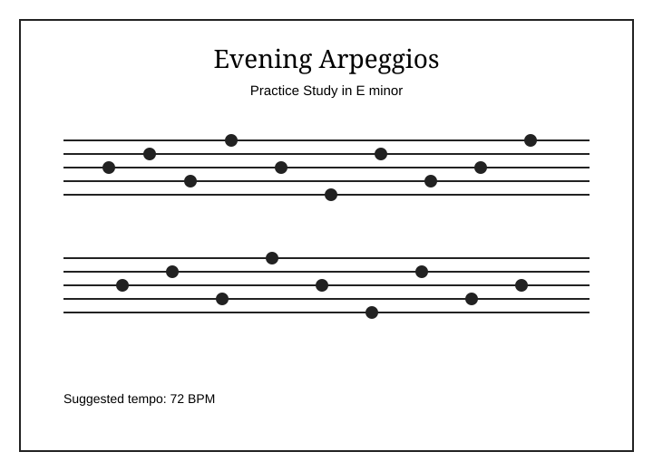
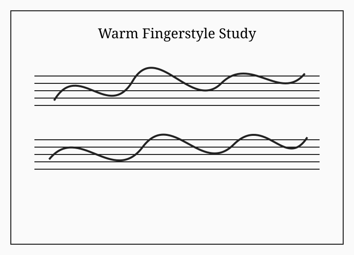
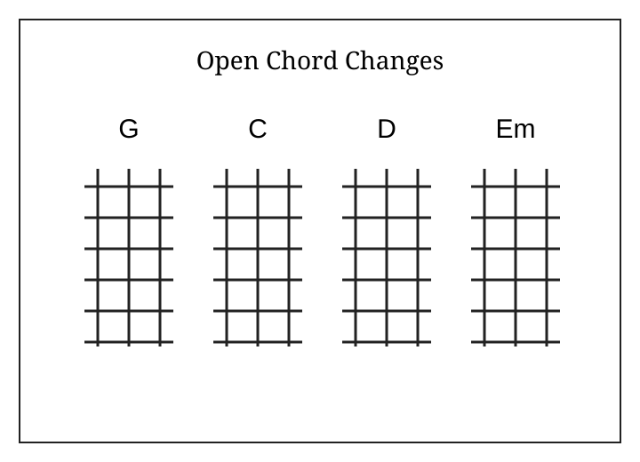

Evening Arpeggios
A calm E minor arpeggio study for building right-hand control and steady timing.
Choose a practice piece. Use the header search to try “fingerstyle.”

A calm E minor arpeggio study for building right-hand control and steady timing.

A short fingerstyle pattern for alternating bass and melody.

A beginner exercise for moving smoothly between G, C, D, and Em.